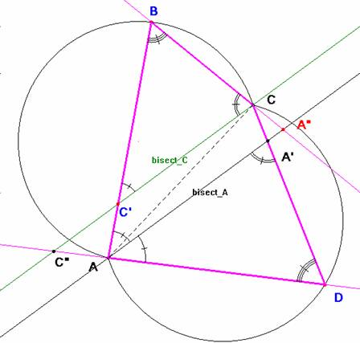

Para el aula
Problema 314.- Sea ABC un triángulo cualquiera. Con un punto D se obtiene un cuadrilátero ABCD.
Construir las bisectrices de los ángulos DAB y DCB.
¿Dónde colocar el punto D para que las bisectrices de DAB y DCB sean paralelas?
Estudiar esta situación y justificar vuestras conjeturas.
Clapponi, P. (1994): Activité… des bissectrices paralleles. Petit X35, [Clapponi es un seudónimo de Philippe Clarou- Bernard Capponi]
Esta actividad comienza por una exploración que puede ser beneficiosa con la ayuda de un logicial como Cabri-Geomètre.
Solución de Saturnino Campo Ruiz, profesor del IES Fray Luis de León, de Salamanca (10 de junio de 2006).-
Si las bisectrices de esos ángulos son paralelas, son semejantes los triángulos BCC’ y DA’A o bien BA”A y DCC”. En cualquier caso son iguales los ángulos en B y en D. Tomando D sobre el arco capaz de AC y amplitud el ángulo en B tenemos resuelto el problema.

Recíprocamente, si D pertenece a ese arco capaz y trazamos la bisectriz de DAB, la paralela por C forma los triángulos semejantes DA’A y BCC’: los ángulos en D y B iguales por construcción, el ángulo BC’C igual al BAA’(por correspondientes) y éste igual al A’AD por ser A’A la bisectriz. Resumiendo, que son iguales los ángulos BCC’ y AA’D. A su vez, AA’D es igual a C’CD (por correspondientes), y entonces la paralela por C trazada, es la bisectriz del ángulo en C del cuadrilátero ABCD.